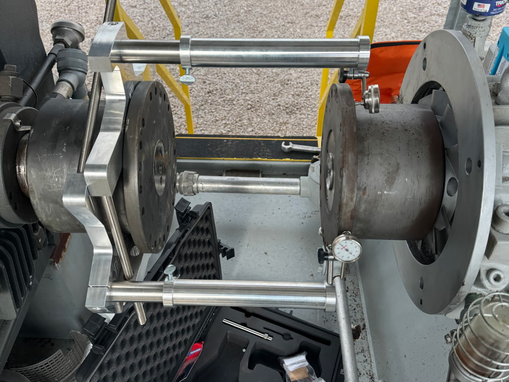
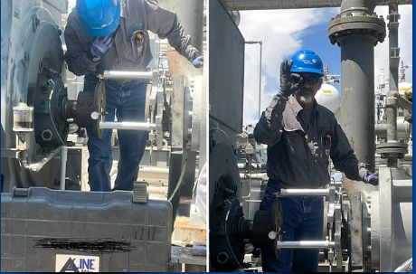

Real feedback from the technicians and supervisors who use ALINE every day in the field

The ALINE tool has been a gamechanger for verifying zero stress tie-ins on our critical equipment. The set up is simple, and the quality gives us the confidence to know we're within tolerance every time.

Checking pipe strain on this beast. ALINE Manufacturing — they make this job easy.
I've got the A-3000 set and love it. My chain jigs stay at home most of the time but ALINE stays in the truck year round. The chain jigs are nice but can't even compare...
We are a millwright apprenticeship school for Millwrights Local 1102. When I had the opportunity to use the ALINE products, I was impressed compared to the chain clamps we currently used — which is why we ordered a set.
Millwrights — what do you call it when you post on Facebook looking for a tool and the manufacturing company owner contacts you? MIRACLE! We'll have ALINE before the weekend. Crazy how God works.